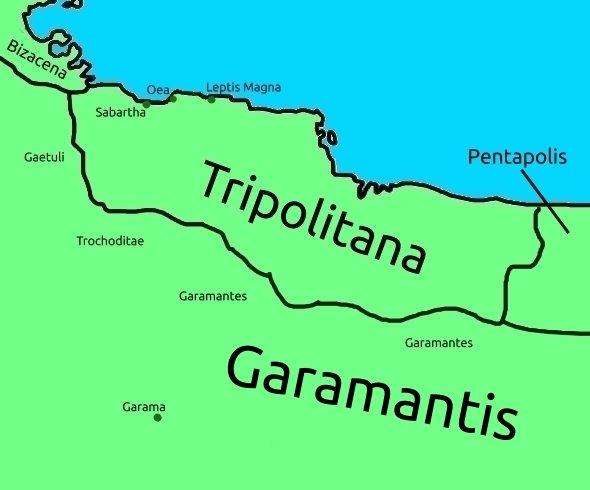

Tripolitana
Tripolim, or Tripolitana - English Tripolitania - is named as such because of it's "tri-polis". Τρία, "tria" in Greek and "tres", neuter "tria" in Latin mean "three", from which "tri-". πόλις, "polis", in Greek means 'city'.
It is called as such because of it's three major cities: Sabartha, Oea, and Leptis Magna.
After Leptis Magna and Sabartha were evacuated during Late Antiquity, Oea remained the only great city in the area, and soon the name "Tripoli" was given to it, hence modern Tripoli, capital of Libya.
Leptis Magna became part of the new city of Al-Khums fully by the 10th century, being considered as part of it's history as such, and Sabartha still exists today.
To the west of Tripolim are the Gaetuli, and to the south the Garamantes, a people said to live below Tripolim and Cyrenensis, and west of Ethiopia and Aegyptus Thebaica, Southern Egypt.